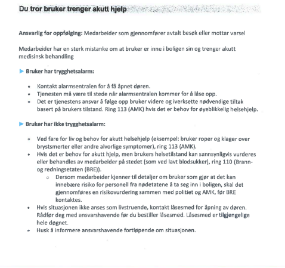
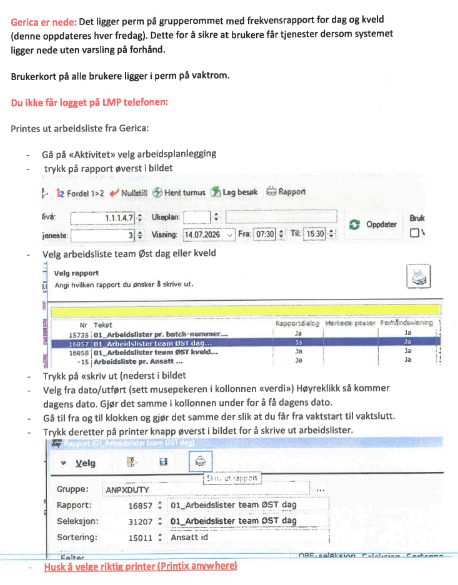
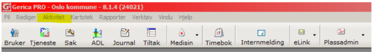
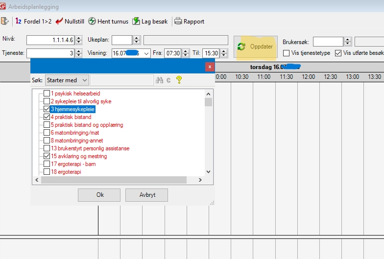
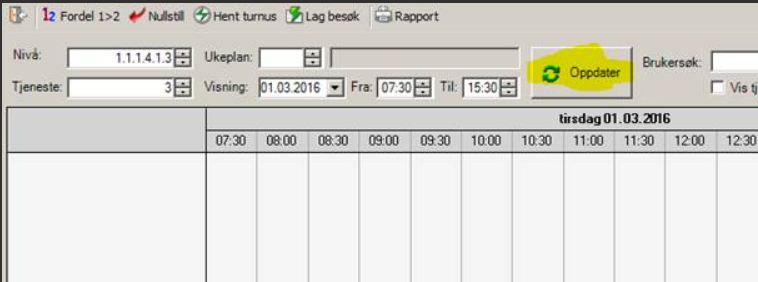

Forskjellige rutiner
Når vi ikke får tak i brukere er rutinen at vi ringer pårørende, legevakten eller sykehusene for å bekrefte/avkrefte innleggelse. Videre må vi ta individuelt vurdering om brukers sykdomsbilde før vi kontakter politiet for hjelp til å bryte leilighet . Er det f.eksempel en bruker som har ustabil diabetes og det ikke er nådd kontakt med bruker i løpet av vakten er det viktig å sette i gang tiltak. Flere av våre brukere som kommer til kontoret har ustabil oppmøte og det er veldig viktig at rutinen følges for dem også. Finner vi ikke ut hvor de er, må teamleder informeres. Det er fort gjort å glemme brukere som kommer hit 2.hver uke for levering av multidose og vi har tilfelle av tragisk sak med en av våre brukere som ble funnet død hjemme. For å sikre at tilsvarende hendelse ikke skjer er vi avhengig av at tjenesteansvarlig oppdaterer seg om brukere de er ansvarlig for minst engang i uken. Viktig beskjed om oppfølging til dagvakt eller til tjenesteansvarlig skal i tillegg til gerica skrives i beskjedbok. Vi skal fremover bruke tavle på grupperom. Her skal vi notere innlagte brukere, brukere vi ikke får tak i og tiltak som er gjort. Det er viktig også å informere teamleder.




- Gå inn på fanen aktivitet og deretter velg «arbeidsliste»
- Velg fanen tjeneste og høyreklikk når du står midt på fanen.
- Velg riktig tjeneste.I tillegg til tjenester som er haket er det viktig å velge tjeneste 101 hverdagsrehabilitering
- Deretter må du oppdatere.
- Rutiner



